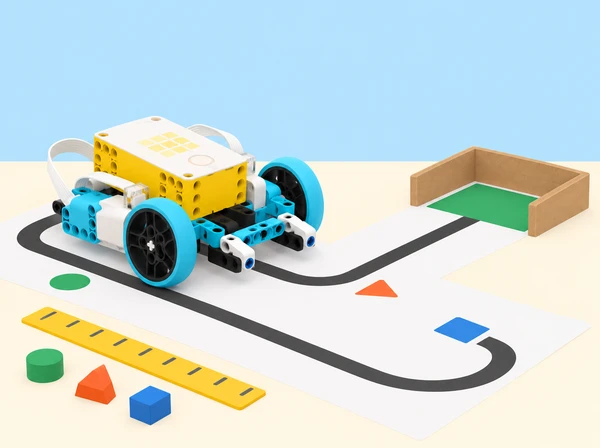

Dades que orienten el trajecte
🏷️ Python, dades i mobilitat escolar
🌱 Situació, repte i intenció
Després dissenyen una ruta de transport escolar en miniatura i expliquen què pot demostrar un prototip, què depén de la prova i què no es pot inferir sobre les rutes o preferències reals de l’alumnat.
Aquesta situació adapta les set lliçons de la unitat 9 Data and Math Functions de LEGO Education Introduction to Python Programming · Course 2: obtindre dades amb sensors; variar velocitat amb operacions; usar variables i comparacions per comptar moviments; transformar graus de motor en canvis de direcció; practicar càlculs en un aparcament de maqueta; dissenyar un vehicle/ruta de transport fins a l’escola; i fer feedback i millores.
L’objectiu no és entrenar una habilitat física ni fer un pla real de mobilitat, sinó comprendre la cadena mesura → càlcul → decisió → comprovació.
🎯 Aprenentatges i vocabulari
- Llegir dades de sensors SPIKE, interpretar el valor i la unitat, mostrar-lo en consola i reconéixer quan una lectura no és vàlida o no està disponible.
- Canviar un valor numèric amb addició/resta i relacions matemàtiques sense eixir dels límits segurs de potència o recorregut.
- Usar variables per comptar, estimar distància i calcular velocitat; convertir mil·límetres a centímetres i mil·lisegons a segons.
- Aplicar
<,<=,>,>=,==i!=en regles que separen casos de prova. - Explicar soroll, llindar, calibratge, repetició i error de mesura; comparar previsió amb observació sense presentar una dada com a exacta.
- Representar direcció i velocitat en una ruta simulada, relacionant magnituds del motor amb girs aproximats i comprovant les instruccions en una pista segura.
- Documentar les decisions, comunicar limitacions i revisar una solució amb les perspectives d’altres equips.
distancia_mm = 235
distancia_cm = distancia_mm / 10
temps_s = 5
velocitat_cm_s = distancia_cm / temps_s
print("cm:", distancia_cm, "cm/s:", velocitat_cm_s)El fragment Python usa dades de mostra per explicar unitats. La mesura física, els ports i el moviment del vehicle s’han d’implementar amb les funcions disponibles en l’app SPIKE local; la compatibilitat entre versions s’ha de provar abans de classe.
🧰 Materials i preparació
Un set SPIKE Prime per equip amb hub carregat i base mòbil estable (o una plataforma amb una sola roda motriu si l’equip vol estudiar el gir), dos motors, sensor de força, sensor de distància i sensor de moviment integrat a l’hub; dispositiu amb SPIKE Python, cinta de paper, cartó per a carrils i aparcament, regla o cinta mètrica, cronòmetre extern opcional, targetes de forma/color per a fites, calculadora i diari de dades.
No és necessari usar tots els sensors alhora: adapteu el repte al maquinari disponible.
Prepareu una ruta recta curta amb topall de cartó tou, carrils independents i una zona d’aturada clara. Mesureu distàncies manualment abans d’executar. Verifiqueu que el sensor de distància té camp de visió lliure, que la superfície de la ruta no rellisca i que el hub mostra lectures en la consola. El sensor de distància del repertori SPIKE retorna mil·límetres; feu explícita la conversió a centímetres.
El sensor de moviment de l’hub dona orientació/angle, que no és directament un recompte de passos humans: aquesta situació evita recollir dades corporals i, si usa l’angle, gira el hub o un suport amb cura sobre la taula. Consulteu la Knowledge Base per a API actual i límits de motors.
Prepareu un full de dades amb columnes per a hipòtesi, entrada, unitat, valor esperat, valor mesurat, diferència, decisió de codi i observacions. Assigneu rols rotatius de programació, conducció, mesura i registre. Acordeu un límit de velocitat baix i una ordre d’aturada abans d’engegar motors.
📅 Seqüència didàctica
Llegir i mostrar dades del sensor (45 min)
Fase 1 · Activem i prediem
Fase 2 · Explorem i construïm
Fase 3 · Expliquem i registrem
Fase 4 · Apliquem i millorem
Conversió i test (10 min): compareu mm amb cm dividint per deu i proveu objectes a distàncies conegudes (per exemple 100, 200 i 300 mm, ajustades a la taula). Si no hi ha lectura, no la tracteu com zero: anoteu “absent/desconeguda”.
Fase 5 · Comprovem i reflexionem
Ajustar velocitat amb operacions i límits (45 min)
Fase 1 · Activem i prediem
Discussió (5 min): parleu de com es regula un ritme i per què un valor de programa no equival automàticament a la mateixa distància en diferents superfícies.
Fase 2 · Explorem i construïm
Base i control (10 min): prepareu una base SPIKE en pista recta. En Python, guardeu la velocitat en una variable numèrica, mostreu-la com a text a la matriu del hub (conversió explícita amb str() quan calga) i escriviu una funció de recorregut que use el valor actual.
Fase 3 · Expliquem i registrem
Modificar amb botons (15 min): configureu un botó per reduir i un altre per augmentar un pas acordat, per exemple 20 unitats; definiu mínim i màxim per impedir ordres negatives o massa ràpides. Proveu primer el límit en pseudocodi i després a velocitat baixa, mantenint fixa la distància i les condicions de la pista.
Fase 4 · Apliquem i millorem
Dades (10 min): per a tres valors de velocitat, feu tres intents i mesureu distància final i temps. Calculeu mitjanes i anoteu també rang (mínim–màxim), no sols una xifra central.
Fase 5 · Comprovem i reflexionem
Comptar oscil·lacions sense comptar-les dues vegades (45 min)
Fase 1 · Activem i prediem
Situació (5 min): mostreu una sèrie de lectures d’angle d’un hub que gira a una banda i torna: 0°, 40°, 82°, 95°, 66°, −10°, −81°, −90°. Pregunteu quantes oscil·lacions s’hi veuen i per què comptar cada lectura per damunt de 75° donaria un nombre massa gran.
Fase 2 · Explorem i construïm
Fase 3 · Expliquem i registrem
Fase 4 · Apliquem i millorem
Fase 5 · Comprovem i reflexionem
Moure i girar amb proporcions conegudes (45 min)
Fase 1 · Activem i prediem
Fase 2 · Explorem i construïm
Fase 3 · Expliquem i registrem
Prova matemàtica (13 min): mesurau el gir resultant en una quadrícula gran de cartó per a dos valors de motor, repetiu tres vegades i calculeu desviació de l’angle previst. Relacioneu divisió/multiplicació amb l’ajust; canvieu una variable cada vegada.
Fase 4 · Apliquem i millorem
Fase 5 · Comprovem i reflexionem
Aparcament de maqueta i gestió de dades (45 min)
Fase 1 · Activem i prediem
Repte (5 min): estacionar la base en una zona ampla de cartó identificada amb forma i color, sense tocar límits ni competir en velocitat. És una simulació, no una funció de conducció autònoma segura.
Fase 2 · Explorem i construïm
Mesura i algoritme (10 min): mesureu longitud i amplada de la zona, distància d’aproximació i amplària de la base. Escriviu pseudocodi per avançar, llegir distància, reduir velocitat abans de la zona i aturar-se; declareu tolerància explícita i casos d’entrada absent.
Fase 3 · Expliquem i registrem
Fase 4 · Apliquem i millorem
Fase 5 · Comprovem i reflexionem
Un trajecte escolar simulat (45 min)
Fase 1 · Activem i prediem
Fase 2 · Explorem i construïm
Fase 3 · Expliquem i registrem
Construcció/programació (18 min): construïu o ajusteu la base i programeu un recorregut amb una funció per avançar, una per girar i una rutina de registre. El programa calcula la longitud de ruta sumant trams i pot convertir la lectura de distància en unitats comunes. Afegiu un control d’aturada; no sobrecarregueu el model amb pesos.
Fase 4 · Apliquem i millorem
Comprovació (8 min): executeu ruta A i B tres vegades, registreu trams, durada, girs, lectures de distància i fallades. La taula només descriu el prototip sobre aquella superfície; no és una comparació de modes de transport ni un estudi de trànsit.
Fase 5 · Comprovem i reflexionem
Mostra (4 min): expliqueu quines dades han influït en una decisió de disseny i quines no s’han mesurat.
Feedback i millora del trajecte (45 min)
Fase 1 · Activem i prediem
Fase 2 · Explorem i construïm
Prova creuada (12 min): l’equip revisor usa una còpia de la ruta o repeteix el procediment amb permís. Dona feedback concret sobre llegibilitat, unitats, casos de sensor absent, seguretat de la pista i coherència entre objectiu i mesura. No se sol·liciten dades de trajecte de persones.
Fase 3 · Expliquem i registrem
Fase 4 · Apliquem i millorem
Fase 5 · Comprovem i reflexionem
🧪 Evidències i avaluació
Portafolis: esquema dels sensors i ports reals; captures o transcripció de dades de mostra sense informació personal; conversió entre mm/cm i ms/s; codi Python comentat; pseudocodi i mapa de ruta; mesures manuals, repeticions, mitjanes i rangs; taula de casos de sensor absents; mesura de girs; registre de depuració; decisions de redisseny; diagrama o taula comparativa de rutes de maqueta; feedback entre iguals; i explicació de límits del prototip.
Valoreu quatre dimensions: tractament de dades (registra valor, unitat i condicions de mesura); raonament matemàtic (converteix unitats i calcula distància/temps amb operacions adequades); programació (variables, comparacions, condicions, sortida i aturada comprovables); i mètode experimental (repeteix, compara, registra incertesa i modifica una variable cada vegada). Afegiu comunicació i col·laboració al retorn final. Una ruta que es completa una vegada no demostra fiabilitat; un càlcul ben documentat que troba una fallada també és una evidència valuosa.
♿ Participació, accessibilitat i seguretat
Oferiu mesures amb regle sobre paper si la connexió o el sensor no està disponible; totes les proves poden fer-se en taula. Les fites tenen forma, símbol i color; eviteu dependre d’una única pista visual o auditiva. Hi ha rols de registre, disseny de ruta, codi i observació, amb rotació. No mesureu ni publiqueu dades corporals, passos, activitat, domicilis o trajectes personals d’alumnes. Les rutes són inventades i les dades són del robot o de targetes sintètiques.
Manteniu la base sobre una superfície horitzontal amb marges i topalls tous, velocitat baixa i aturada manual; no feu circular robots per passadissos amb persones ni a prop d’escales. Desconnecteu motors abans d’ajustar la construcció.
🔗 Referents i adaptació
Adapta les set lliçons de la unitat 9 Data and Math Functions del curs LEGO Education Introduction to Python Programming · Course 2: Get Moving to Get Data, Bike Riding for Data, Counting Your Steps, Make It Move, Parking Lot, My Transportation i Ideas to Help with My Transportation.
Conserva lectura de sensors i consola, distància en mm amb conversió a cm, ajust de velocitat amb variable, sensor de moviment i llindars/estat per a evitar dobles recomptes, càlcul de distància i velocitat, girs amb operacions, depuració de crides, aparcament, disseny de transport, planificació i feedback. El repte de passos corporals es transforma en gir del hub/seqüència sintètica i declara explícitament que no és un pedòmetre; el trajecte és una maqueta i les dades no són sobre mobilitat personal.
Les instruccions de construcció i els programes complets oficials no es reprodueixen; els exemples de codi de la fitxa són conceptuals i l’API es comprova en la versió local.